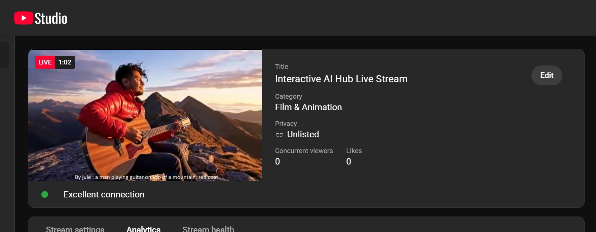
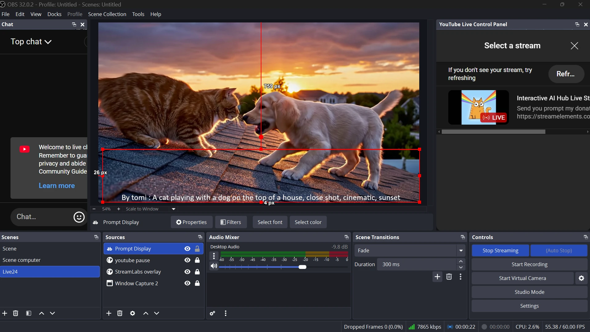

The collaborative AI Gen TV
November 2025 · Updated September 2026
Live Stream Replay
A live TV channel programmed by its audience. Viewers of a YouTube stream donate with a prompt, AI agents check it and turn it into a video with Google's Veo, and a few minutes later it plays live on stream with the donor's name.
Inspiration
Inspired by Google's AI Flow, the hype around generative AI video, and interactive streaming. The goal is entertainment: bring people together for a fun, surprising show where nobody knows what comes next. Along the way it shows what AI video generation can do, and playfully teaches viewers how to write a good video prompt, because they see their own words come to life (or get rewritten).
What it does

From the viewer's side, it's five steps:
- Donatewith a video idea as the message
- ModerateAI checks the prompt, rewrites it if needed
- GenerateVeo turns it into a video
- Storethe video lands in a cloud bucket
- Broadcastit plays live with name and prompt
The newest video always plays first. When it ends, the stream falls back to a random replay of videos generated earlier in the session, so the channel never goes quiet.
How it works
The whole system in one picture: two entry points feed a single agent service on Google Cloud, and the streaming PC picks up whatever it produces.
1. Keeping the stream family-friendly
Anyone can type anything into a donation, and it goes out live. So every prompt is first checked by the Cloud Natural Language API, which scores it for toxicity. A Gemini agent then decides what to do with it. Rather than just rejecting prompts, it rewrites them, so every donor still gets a video:
The prompt is used exactly as written.
A cat surfing a giant wave at sunsetRewritten to be family-friendly, and marked "censored" on screen.
Two knights in a bloody sword fightTwo valiant knights engaged in a heroic and honorable sword duel, their armor gleaming in the sunlight
Replaced entirely by an invented prompt that is meant to be spectacular or funny.
Shown as "prompt banned, replacement prompt here: …"Real input and output from a test run of the pipeline.
2. Generating the video
The video worker agent calls Veo through the Vertex AI API and saves the result to a Google Cloud Storage bucket, together with the text to show on screen. The donation amount chooses the model:
A final agent confirms whether the whole workflow succeeded or failed, so the caller always gets a clear answer.
3. From donation to agent
My YouTube channel was too new for native donations, so I used StreamElements. A local bot (Streamlabs Chatbot) on my PC catches each donation, checks the amount, fetches a GCP identity token, and starts a small C# program. That program builds the request (prompt, quality, donor name) and makes the authenticated call to Cloud Run. The agent service is private, so only callers with a valid identity can use it.
For the hackathon jury I also built a web app, a second Cloud Run service, so they could try it without the stream. Users sign in with Google and request access. I approve them by hand, and each approved account gets a small number of generations. Finished videos are shared back through a time-limited signed link.
4. On the streaming PC

A Python program watches the bucket. When a new video and its prompt file
appear, it downloads them, plays the video with FFmpeg, and writes the prompt
into a local prompt.txt. When the video ends, it picks a random earlier video from a
local SQL database and keeps the replay loop going.
OBS captures two sources, the FFmpeg window and prompt.txt, and
broadcasts the combined scene to YouTube Live.
2026 update: new models and cost safeguards
Coming back to the project a year later, I upgraded it to the latest models: Gemini 3 for the
agents and the stable Veo 3.1 release for video. One surprise: the new Gemini models are only
served from Google's global endpoint, while Veo and the storage bucket stay in
us-central1, so the two now have separate location settings.
The bigger lesson was about cost. Every Veo video is billed per second, and Google Cloud budget alerts can arrive hours after the spending happens. An alert can tell you what you already spent, but it can't stop the spending. So I added limits that are checked before every paid call: